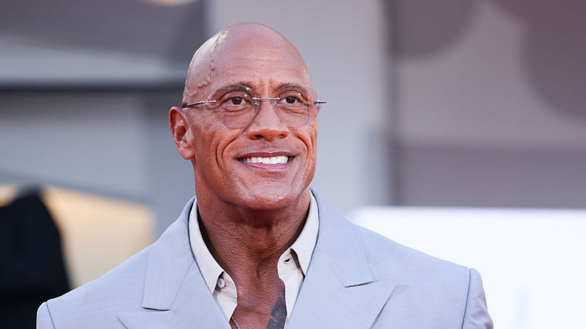

Jungle Cruise é um filme de aventura lançado em 2021, inspirado no brinquedo da Disney. A história acompanha o capitão Frank e a pesquisadora Lily em uma expedição cheia de mistérios. Jungle Cruise gira ao redor do malandro e brincalhão Frank Wolff (Dwayne Johnson), capitão do barco La Guilla. Ele é contratado pela Dra. Lily Houghton (Emily Blunt) e seu irmão McGregor (Jack Whitehall) para levá-los em uma missão pelas densas florestas amazônicas com a intenção de encontrar uma misteriosa árvore com poderes de cura que poderá mudar para sempre o futuro da medicina. No caminho, eles viverão inúmeros perigos, enfrentando animais selvagens e até mesmo forças sobrenaturais.

Capitão carismático e cheio de segredos.
Pesquisadora determinada em busca da lendária árvore.
Irmão de Lily, elegante e leal.